01
Scale error
\(E_{\mathrm{scale}}=(1-A/X)^2\)
Zero denotes equal norms; relative norm mismatch is penalized quadratically.
Paper experiment dashboard
Controlled studies of optimizer displacement relative to an estimated Newton step. Each section develops one paper experiment from its motivation and protocol through the observed geometry and open questions.
Metric geometry
\(X=\|x^*\|_2\) \(A=\|a\|_2\) \(P=\|\operatorname{Proj}_{a^\perp}(x^*)\|_2\)
\(E_{\mathrm{scale}}=(1-A/X)^2\)
Zero denotes equal norms; relative norm mismatch is penalized quadratically.
\(\theta_0=\arcsin(P/X)\) \(E_{\mathrm{angle}}\in\{\theta_0,\pi-\theta_0\}\)
The branch is selected by the estimator's \(-a^\mathsf{T}g\) orientation test.
\(D=\sqrt{X^2+A^2-2XA\cos\theta}\) \(E_{\mathrm{dist}}=D/X\)
The CSV records \(D\); the dashboard plots its relative form.
\(P/X\) determines the sine magnitude but not whether the angle is acute or supplementary. The sign test supplies that missing orientation, and no tolerance is added to a denominator.
Figure controls
Column width applies to every experiment panel.
Experiment 01
This experiment asks whether the optimizer-to-Newton-step relationship is stable across model depth and whether conclusions drawn under a fixed learning rate survive the introduction of cosine decay. ResNet-20 and ResNet-44 provide two depths from the original CIFAR family, while paired fixed and decayed schedules separate architectural effects from the changing update scale induced by scheduling.
Every column trains CIFAR-10 for 100 epochs with batch size 128 and GroupNorm using four groups. SGD, AdamW, and Muon start from matched model seeds and data order. Geometry is estimated with SNE using \(h=2\) HVPs per step and interval \(d=10\), hence sketch size \(m=20\). Training loss is recorded every step, the three geometric measurements every ten steps, and validation accuracy once per epoch. The geometric and training curves use an EMA with \(\lambda=0.95\); validation remains unsmoothed. Scale is reported exclusively as \((1-\|a\|_2/\|x^*\|_2)^2\).
ResNet-20 · CIFAR-10
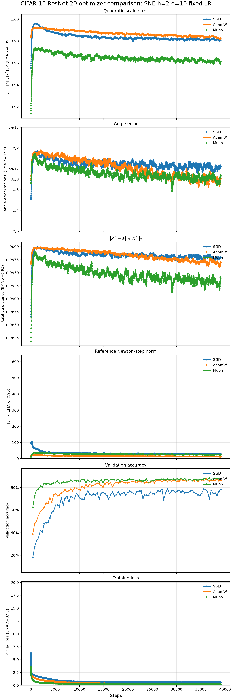
ResNet-44 · CIFAR-10
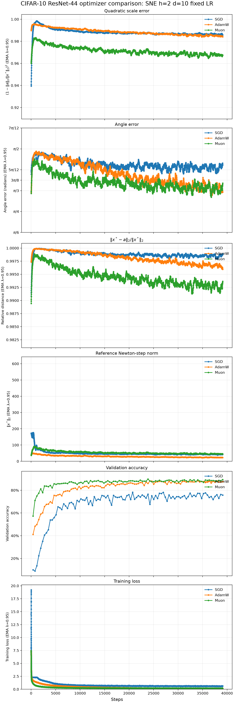
ResNet-20 · CIFAR-10
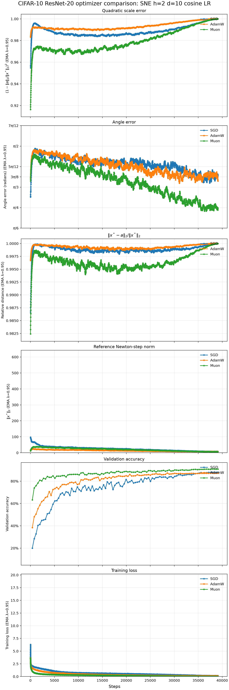
ResNet-44 · CIFAR-10
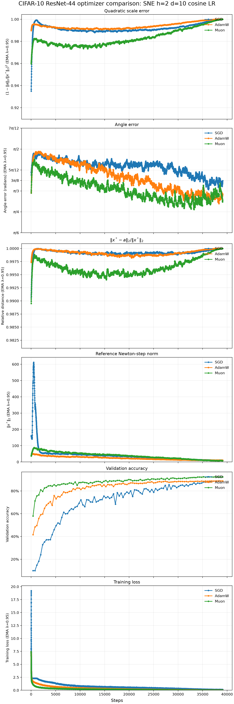
Reading the four columns on common row-wise axes distinguishes effects that persist across depth from effects introduced by the schedule. The cosine runs progressively suppress the realized optimizer displacement, causing the scale and relative-distance rows to approach their limiting values late in training even when directional alignment remains informative. The fixed-rate runs therefore provide the cleaner view of steady-state geometry, whereas the cosine runs reveal how that geometry co-evolves with the training protocol. A remaining question is whether a learning-rate-normalized displacement should be reported alongside the realized update, and whether the same optimizer ranking persists for wider networks, alternative normalization layers, and longer schedules.
Experiment 02
This experiment isolates how temporal averaging changes the geometry of an optimizer step. Rather than treating momentum as a secondary tuning detail, it compares the same three coefficients across Muon's matrix update, AdamW's first-moment estimate, and classical SGD momentum, then repeats the comparison under fixed and cosine-decayed learning rates.
All six columns use ResNet-18 on CIFAR-10 for 100 epochs with the same initialization, batch size 128, GroupNorm configuration, weight-decay treatment, and optimizer-specific base learning rates. The ablated value is \(0.9\), \(0.5\), or \(0.1\). For Muon only the matrix-parameter momentum changes, leaving the auxiliary AdamW path fixed; for AdamW the sweep changes \(\beta_1\) while \(\beta_2=0.999\); for SGD it changes the conventional momentum coefficient. SNE again uses \(h=2\), \(d=10\), and \(m=20\), with EMA (\(\lambda=0.95\)) applied only to geometry and training loss and raw validation accuracy retained at one observation per epoch.
Muon · ResNet-18
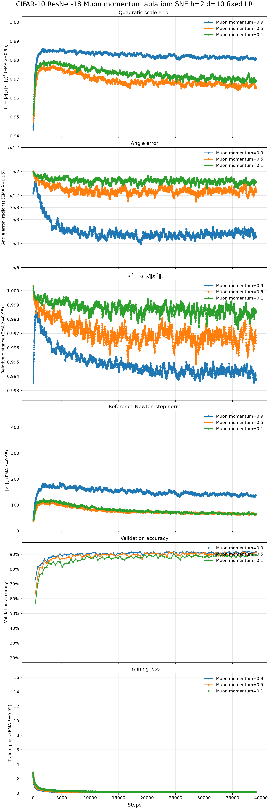
AdamW · ResNet-18
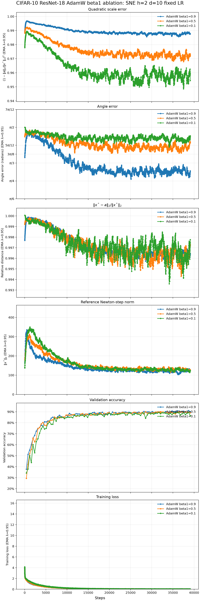
SGD · ResNet-18
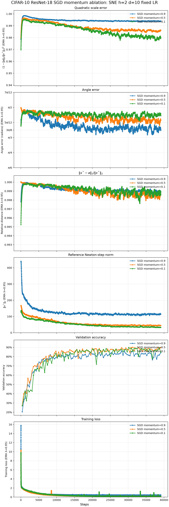
Muon · ResNet-18
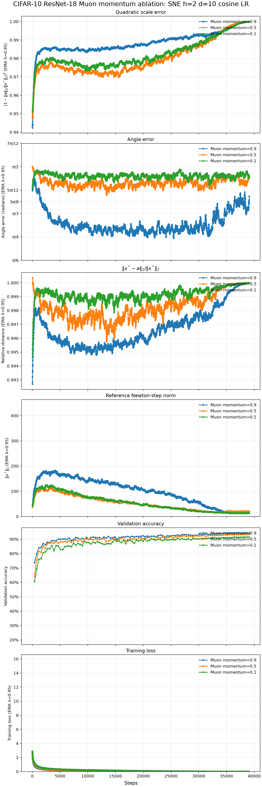
AdamW · ResNet-18
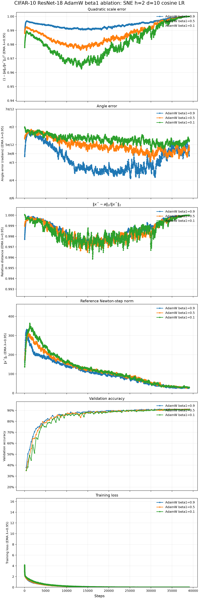
SGD · ResNet-18
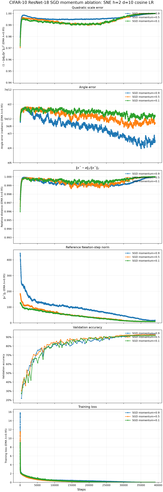
Across optimizer families, stronger momentum primarily improves directional agreement with the estimated Newton step, while its effect on scale is not equivalent: the coefficient changes both accumulated state and the norm of the realized displacement. The shared axes make this trade-off visible without allowing any column to magnify a narrow local range. Cosine decay again pushes the norm-sensitive metrics toward their zero-update limits, but the directional separation between coefficients remains visible for much of training. The completed cosine-SGD sweep strengthens this observation: momentum \(0.1\) ends with the largest angle error and the lowest validation accuracy, whereas momentum \(0.9\) gives the strongest directional agreement and validation result. The next analysis should determine whether these trends are explained by effective averaging horizon alone or by optimizer-specific state dynamics, and should test coefficients on a finer grid with uncertainty across seeds before drawing a prescriptive conclusion about the best momentum value.
Experiment 03
This experiment asks whether the optimizer-to-Newton-step relationships observed in supervised vision persist in an autoregressive transformer. Character-level language modeling changes the architecture, objective, task metric, and source of stochasticity at once: dropout must remain active during training, yet every gradient and Hessian-vector product contributing to one estimate must refer to the same realized objective. The comparison therefore tests both the transfer of the geometric analysis and the estimator's ability to operate under model randomness.
A 10.75M-parameter GPT is trained on character-level Tiny Shakespeare for 2,500 optimizer steps using six transformer layers, six attention heads, width 384, context length 256, batch size 64, dropout 0.2, and the exact math attention backend. SGD uses base learning rate 0.1, AdamW uses 0.003, and Muon uses 0.02 for matrix parameters with a 0.0003 auxiliary AdamW path. Every optimizer follows a 50-step linear warmup and cosine decay to one tenth of its base rate. SNE uses \(h=10\) HVPs per step and \(d=5\), hence \(m=50\); training loss is recorded every step, geometry every five steps, and validation cross-entropy over 200 batches every 250 steps. The model remains in training mode while an RNG snapshot replays the forward-pass dropout realization inside estimator closures. Geometry and training use EMA (\(\lambda=0.95\)), validation remains raw, and both task losses are shown as perplexity. Scale error is \((1-\|a\|_2/\|x^*\|_2)^2\).
Char-GPT · Tiny Shakespeare
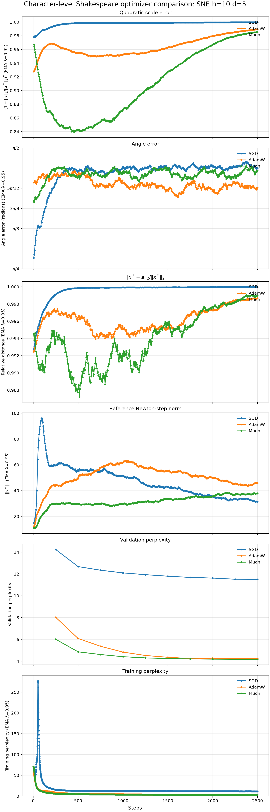
Adaptive and matrix-orthogonalized updates substantially outperform SGD on the language-modeling objective: final validation perplexity is 4.17 for Muon, 4.26 for AdamW, and 11.50 for SGD. AdamW finishes with slightly lower training perplexity than Muon, 3.07 versus 3.11, but its validation perplexity reaches 4.23 at step 2,250 before ending slightly higher; Muon retains the better validation result despite that small training-loss disadvantage. The geometric rows separate complementary effects rather than yielding one universal predictor. Muon produces the largest relative update early in training and reaches the lowest quadratic scale error, while AdamW generally exhibits stronger directional agreement. For all three optimizers, however, the realized update remains much smaller than the estimated Newton step and cosine decay pushes scale error and relative distance back toward their zero-update limits late in training. The next study should repeat this comparison across seeds and longer contexts, include a fixed-learning-rate control, and test whether learning-rate- normalized geometry predicts validation performance more reliably than the realized displacement alone.